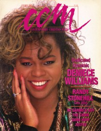

CMnexus: Contemporary Christian culture, music, and media.
|
|
Deniece WilliamsOn the cover|  | January 1987
CCM | Media coverage:- Oct 1981 in CCM "Talent: Niceys New Song", by Charles Genty
- Sep 1984 in CCM "Deniece Williams"
- Oct 1985 in Campus Life "Values In Media: Deniece Williams, Teri DeSario", by Walt Quinn
- Aug 1986 in The Lutheran "Sight and Sound: 'Let's Hear It For The Lord!' She Sings Now", by Steve Rabey
- Nov 1986 in CCM "In Concert: Singin' In The Rain: Greenbelt '86, Castle Ashby Park, Northamptonshire, England", by Lorne F. Anderson
- Jan 1987 in CCM "Footloose, Fancy, and Free", by Steve Rabey
- 1987 in Cornerstone "Interview: Deniece Williams", by Chris Ramsey
- Feb 1987 in Charisma "So Glad She Knows Jesus", by Davin Seay
- Jan 1988 in Today's Christian Woman "Sings A New Song"
- Apr 1988 in Religious Broadcasting "Music: Denice Williams Sings A New Song", by Dale Hanson Bourke
- Jan 1990 in CCM "Making Every Moment Count", by Eric Stephens
- Jun 1998 in Aspire "Fragile Strength", by Margaret Becker
- Sep 1998 in CCM "Rewind: Let's Hear It for the Girl", by Devlin Donaldson
- Apr 1999 in CCM "On The Beat: Women Triumph at Grammys"
Albums & reviews:1986: Hot on the Trail1986: So Glad I Know1989: Special Love1991: From the Beginning1991: Lullabies To Dreamland1996: Love Solves It All1998: This Is My Song Award Summary (Nominations / Wins)Dove Awards1991 Dove Awards1992 Dove AwardsGrammy Awards- 1986 Grammy Awards
- Best Soul Gospel Performance, Female: "I Surrender All"
- Best Gospel Performance by a Duo or Group, Choir or Chorus: "They Say"
1987 Grammy Awards- Best Gospel Performance, Female: "I Believe In You"
1998 Grammy Awards- Best Pop/Contemporary Gospel Album: This Is My Song
Books about Deniece Williams- "Deniece Williams" in The Encyclopedia of Contemporary Christian Music (Mark Allan Powell, 2002)
|